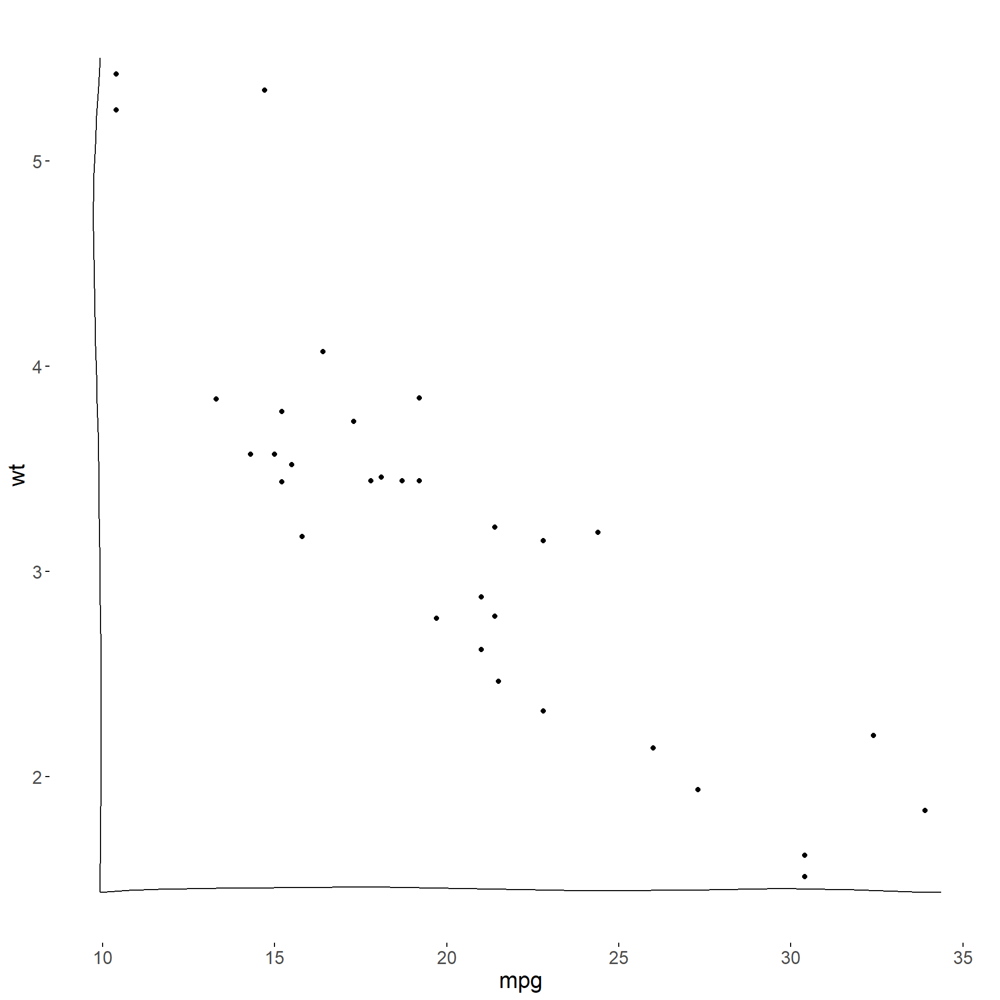
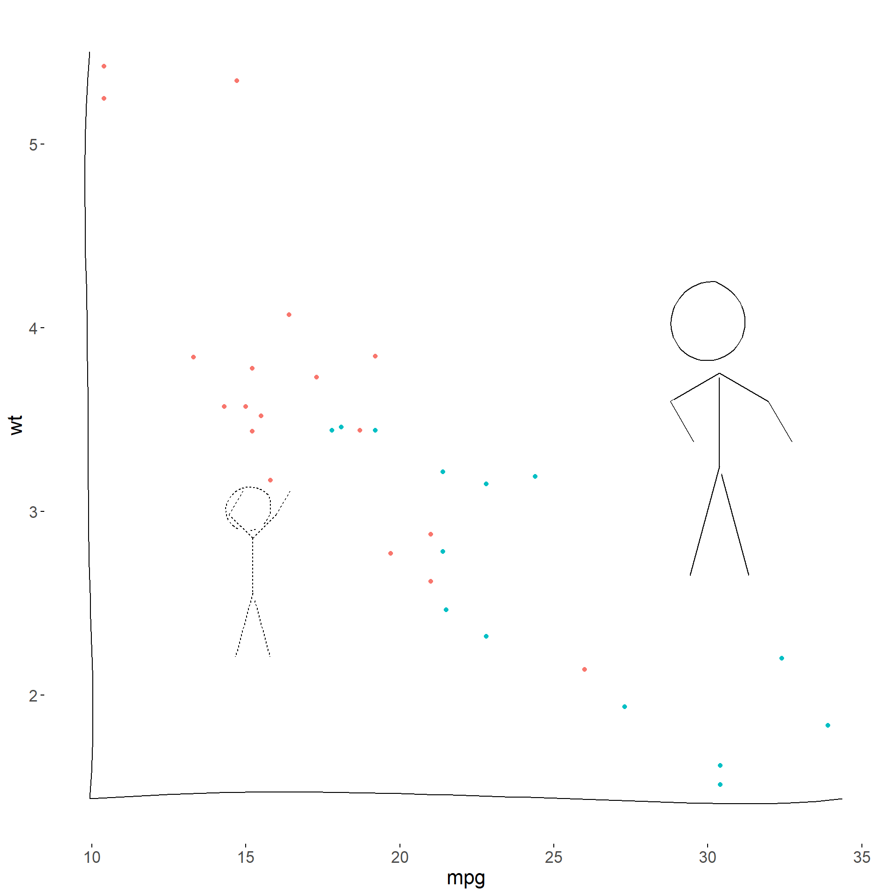
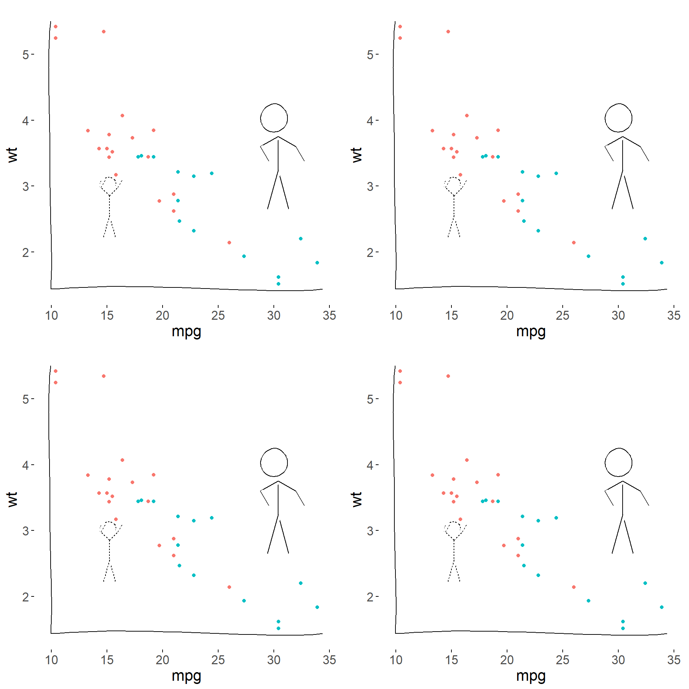
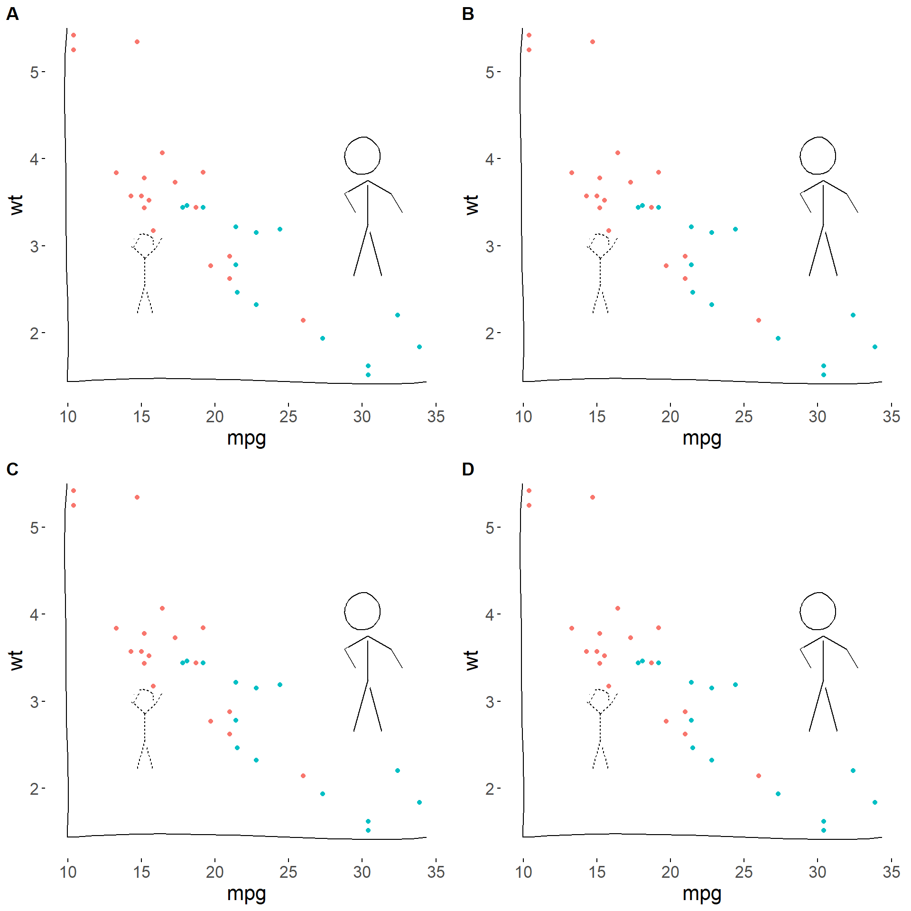
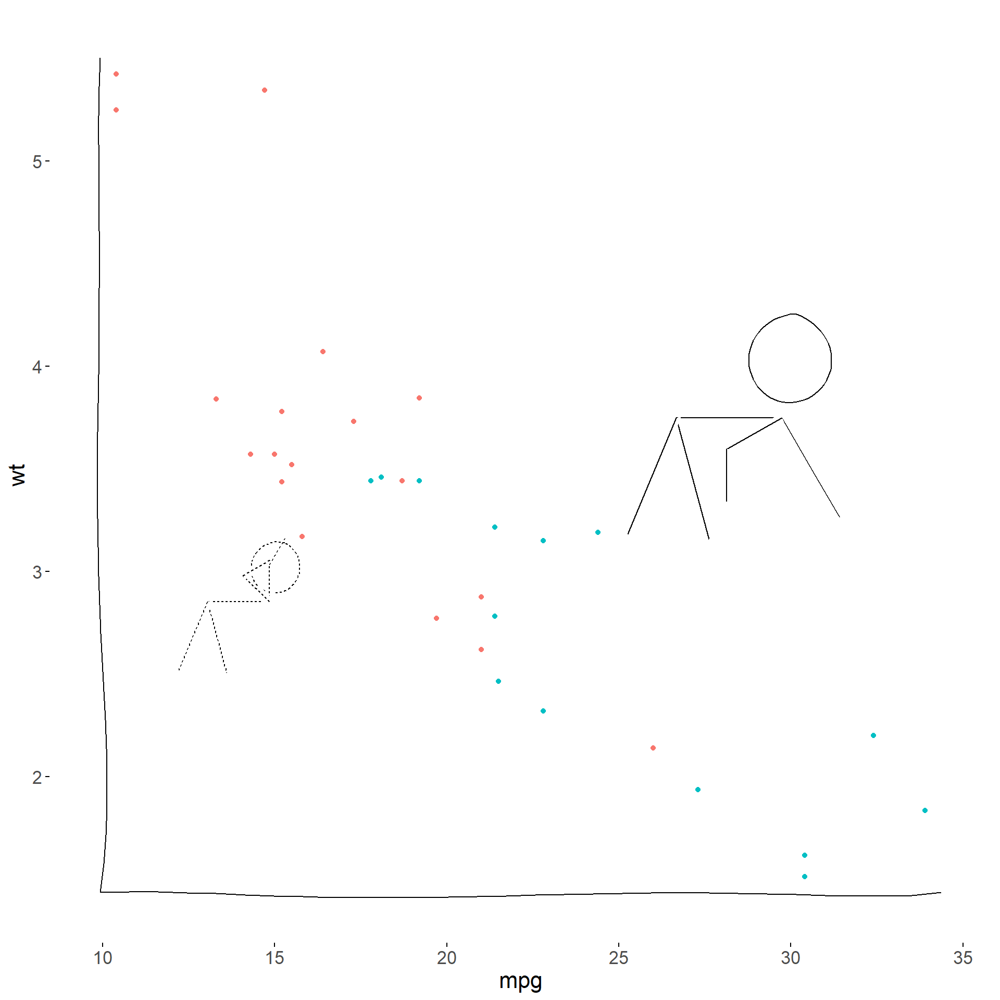

install.packages("xkcd",dependencies = TRUE)
install.packages("gridExtra")
install.packages("cowplot")library( ggplot2 )
library( gridExtra )
library( cowplot )
library( xkcd )xrange <- range(mtcars$mpg)
yrange <- range(mtcars$wt)
set.seed(123) # for reproducibility
p <- ggplot() + geom_point(aes(mpg, wt), data=mtcars) +
xkcdaxis(xrange,yrange)
p
ratioxy <- diff(xrange)/diff(yrange)
mapping <- aes( x, y, scale, ratioxy,
angleofspine,
anglerighthumerus,
anglelefthumerus,
anglerightradius,
angleleftradius,
anglerightleg,
angleleftleg,
angleofneck,
linetype=city )
dataman <- data.frame(x= c(15,30), y=c(3, 4),
scale = c(0.3,0.51) ,
ratioxy = ratioxy,
angleofspine = -pi/2 ,
anglerighthumerus = c(pi/4, -pi/6),
anglelefthumerus = c(pi/2 + pi/4, pi +pi/6),
anglerightradius = c(pi/3, -pi/3),
angleleftradius = c(pi/3, -pi/3),
anglerightleg = 3*pi/2 - pi / 12,
angleleftleg = 3*pi/2 + pi / 12 ,
angleofneck = runif(1, 3*pi/2-pi/10, 3*pi/2+pi/10),
city=c("Liliput","Brobdingnag") )
p <- ggplot() + geom_point(aes(mpg, wt, colour=as.character(vs)), data=mtcars) +
xkcdaxis(xrange,yrange) +
xkcdman(mapping, dataman) +
theme(legend.position = "none")
p
# library( gridExtra )
grid.arrange( p, p, p, p, ncol=2, nrow=2 )
# library( cowplot )
plot_grid( p, p, p, p,
labels= c("A","B","C","D"), ncol=2, nrow=2 )
dataman <- data.frame(x= c(15,30), y=c(3, 4),
scale = c(0.3,0.51) ,
ratioxy = ratioxy,
angleofspine = -pi,
anglerighthumerus = c(pi/2, -pi/3),
anglelefthumerus = c(pi/2 + pi/4, pi +pi/6),
anglerightradius = c(pi/3, -pi/3),
angleleftradius = c(pi/6, -pi/2),
anglerightleg = 3*pi/2 - pi / 8,
angleleftleg = 3*pi/2 + pi / 12 ,
angleofneck = runif(1, 3*pi/2-pi/10, 3*pi/2+pi/10),
city=c("Liliput","Brobdingnag") )
p <- ggplot() + geom_point(aes(mpg, wt, colour=as.character(vs)), data=mtcars) +
xkcdaxis(xrange,yrange) +
xkcdman(mapping, dataman) +
theme(legend.position = "none")
p